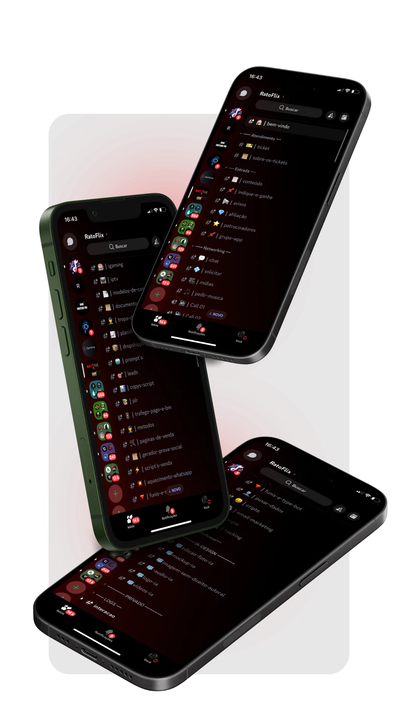

Seu acervo secreto de conteúdos gratuitos
Descubra cursos, filmes e aplicativos pagos disponíveis gratuitamente. Navegue por um acervo único e atualizado.
Explorar AgoraDescubra cursos, filmes e aplicativos pagos disponíveis gratuitamente. Navegue por um acervo único e atualizado.
Explorar Agora
A única comunidade de Networking que chega em todos os segmentos. De uma forma eficiente, organizada e exclusiva.
R$ 20,00 - Acesso Vitalício
🔓 Libere seu acesso agora